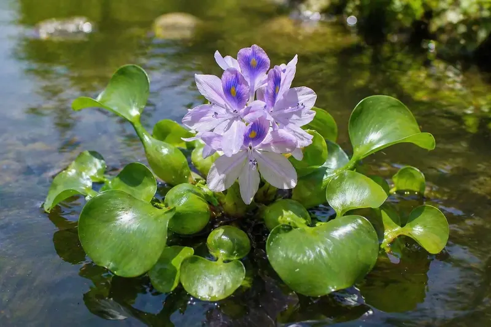

Растения для пруда
Эйхорния (водный гиацинт)
Цена и наличие
- 5-20 см14 BYN / шт.В наличии
- 20-30 см21 BYN / шт.В наличии
- вариегатный30 BYN / шт.В наличии
Данные на 23.11.2026.
Характеристики
- Время цветения
- Август-сентябрь
- Размер растения
- От 10 до 50 сантиметров
- Диаметр цветков
- 3-7 сантиметров
- Длина корней
- 60 сантиметров
- Длина стеблей
- 10-15 сантиметров
Описание
Водный гиацинт или эйхорния (Eichornia crassipes) - красивое плавающее растение из семейства понтедериевые (Pontederiaceae). Растение быстро разрастается, полностью закрывая водную гладь и причиняя тем самым неудобство местным жителям. Зато цветок может стать прекрасным украшением искусственного пруда, аквариума или зимнего сада.
Водный гиацинт – свободноплавающее водное растение. Исторической родиной вида является Южная Америка. Подобное название растение получило за характерную форму соцветий и сходную окраску цветов. Однолетнее растение. Листья эйхорнии собраны в розетку и окрашены в зеленый цвет. Листовые пластинки глянцевые и плотные, округлые, нередко с волнообразными краями. У основания листьев располагаются утолщения, которые дарят растению плавучесть. Цвет лепестков может быть голубым, розовым или фиолетовым. Корни тонкие и многочисленные. Они полностью расположены под водой и могут вытягиваться до полуметра в длину. Гиацинт относительно неприхотлив в уходе, однако нуждается в обязательном сдерживании роста посредством удаления лишних боковых побегов. Золотая рыбка, орфа, карп, линь, карась серебряный, толстолобик прекрасно чувствуют себя с данным водным растением.